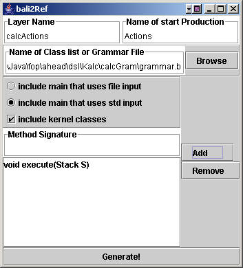
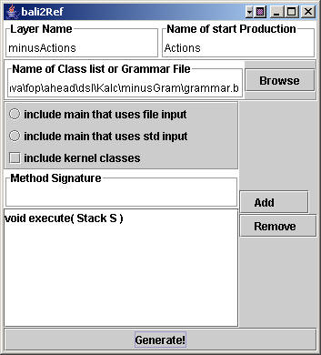

|
|
How to Write a Translator Using AHEAD |
AHEAD provides a comprehensive set of tools for building languages. There are two ways in which AHEAD can be used to build a language: either build a translator directly or develop a preprocessor which translates a program of that language into a host language (e.g., Java). The techniques for both are similar.
In this chapter, we outline steps that you will need to take to create an extensible language and its translator. The introductory sections show how to specify and write a translator; the last section explains how to extend the translator in a feature-oriented way.
Code for the examples in this section are found here
 .
.
Customizing Template.xml |
The first step in creating a language or language extension is to customize an Ant XML file for building the language. We provide two ant XML files, Template.xml and Configure.xml, for this purpose. Template.xml is a template of Ant XML file; Configure.xml takes Template.xml as input and generates an Ant XML file for a specific language. We name our language mycalc in this example. In order for customizing an Ant XML file, run command:
c:/ahead > ant -f %fopdocs%/Configure.xml -Dproject.name="mycalc"
where %fopdocs% is the path to the AHEAD/FOP documentation directory. The output of this command is an Ant XML file c:/ahead/mycalc.xml. We will use it to build our language and its extension in the following steps.
Note: we are generalizing Configure.xml so that the full set of AHEAD directories are not necessary for building translators.
Model Directory Creation |
The next step is to identify a model directory within AHEAD. A model is a set of features called units. A language specification is a unit or composition of units. If you are defining a language for the first time, you'll probably have to create a new model directory. If you are creating a language extension, then a model for the host language (i.e., the language to be extended) must already exist. Once the model directory is known, create a pair of subdirectories, one for language specification and another for semantic actions.
As an example, suppose we want to create a language for a calculator. Suppose further this is a completely new language. Our actions are to:
Create a model directory. Suppose the model name is Kalc. If so, create ahead/dsl/Kalc.
Create a grammar directory ahead/dsl/Kalc/calcGram in which we will place a specification of our mycalc language grammar.
Create a semantic directory ahead/dsl/Kalc/calcActions in which we will place code for semantic actions.
C:/ > cd ahead/dsl
C:/ahead/dsl > mkdir Kalc
C:/ahead/dsl > cd Kalc
C:/ahead/dsl/Kalc > mkdir calcGram
C:/ahead/dsl/Kalc > mkdir calcActions
Host Language Specification |
The next step in building a translator is to write a Bali grammar specification of the host language. Suppose we want to build a preprocessor for a postfix calculator which only supports the add operator. Its Bali grammar is given in grammar.b (shown below):
// grammar.b : simple calculator
// Simple tokens specified in simple format
"+" PLUS
// Regular expression tokens specified in JavaCC format
TOKEN :
{
<INTEGER: ["1"-"9"] (["0"-"9"])* >
}
Actions : (Action)+
;
Action : INTEGER :: Push
| PLUS :: Plus
;
Place grammar.b in directory ahead/dsl/Kalc/calcGram.
Be aware of a naming convention that AHEAD assumes: a Bali specification is always named grammar.b
Bali grammar specifications don't have explicit precedence. Thus, it is harder to write infix grammars for, say, arithmetic expressions than it needs to be. You should be aware of this limitation when designing your grammar.
JavaCC is a recursive-descent parser used by AHEAD and does not allow left recursion. Bali grammars are translated into JavaCC grammar, so it can not be left-recursive. See Appendix for an example of a left-recursive grammar.
Finally, note the Bali convention that names in all CAPITALS are token names ― so don't try to use non-terminal production names that are all CAPITALS.
Hints for writing grammars: Remember that translating a grammar specification to code is a 2-stage process. First, the grammar.b file is translated to a grammar.jj file by the bali2javacc tool, and then the grammar.jj file is translated to a set of .java files by the javacc tool. You can incrementally debug your grammar by running:
> bali2javacc grammar.b
// see if there are errors in translation> javacc grammar.jj
// see if javacc complains
If no errors are found in this process, you're grammar will produce a parser. If you do this, you'll see that a bunch of .java files (and a .jj file) have been created. Remember to delete these files, keeping only the .b file. If you keep them, composer will try to compose them with other files, and causing all sorts of problems that you don't need.
Here's another hint. To help disambiguate grammars, javacc uses lookaheads. Take a look at ahead/dsl/java/javaGram/grammar.b for examples.
Writing Equation Files |
AHEAD synthesizes a program by evaluating an equation. An equation file specifies the composition of all the grammar and semantic action layers that defines our translator, where the top-most layer is the base layer, are the following layers are refinements. Enter directory ahead/equations and create a mycalc.equation file, whose contents are:
dsl/kernel
dsl/Kalc/calcGram
build/dsl/Kalc/calcGram
dsl/Kalc/calcActions
The dsl/kernel layer is the base layer for our calculator language, which is provided by AHEAD. Kernel defines the classes relevant to parse tree structure, parse tree traversals, etc. dsl/Kalc/calcGram is the grammar layer for our language. As we did in the last section, we put a Bali grammar specification in this directory. build/dsl/Kalc/calcGram is a layer that is generated from dsl/Kalc/calcGram (by our mycalc.xml script) and is stored in the build/ directory of AHEAD. dsl/Kalc/calcActions is the semantic layer. This layer serves as a refinement to the grammar layer and defines the semantic actions for our grammar. We will use bali2layer to generate a set of template classes for this layer. Semantic actions are added manually, as we will see in later sections. At this point, we have not defined the semantic actions of our grammar.
Note the naming convention of equation files. If the language we are building is X, then the equation files are always named as X.equation.
Building a Parser |
Now we're ready to debug our grammar and build a parser. To do so, use mycalc.xml:
C:/ahead> ant -f mycalc.xml
Executing this ant command builds a parser for mycalc language in directory ahead/build. The following steps are automatically performed by mycalc.xml:
The bali2jak tool is applied to an equation. It traverses each term in the equation, identifies all Bali grammar files X/grammar.b (where X can be any path) and generates an inheritance lattice and parse tree classes in the build/X directory.
The composer tool composes layers specified in an equation file;
The bali2javacc tool generates a Javacc grammar file given the composed grammar file of step (2);
The javacc2java (i.e., javacc) tool generates a parser given a Javacc grammar produced by step (3);
The jak2java tool converts all Jak files into Java source files; and
All Java sources are compiled and a JAR file mycalc.jar is build in directory build/mycalc/lib.
Bash and batch files are generated for mycalc and placed in the ahead/build/bin directory.
Now run mycalc:
C:/ahead> mycalc
You'll notice that nothing happens. Since the default Main class does nothing, you shouldn't be surprised. All that we have done is to compile the specification of a grammar (and made sure that our .b file was at least syntactically correct); no actions for the calculator grammar rules have been defined. Our next step is to introduce these actions.
Generating a Semantic Layer |
AHEAD provides a bali2layer tool for this purpose. Enter directory dsl/Kalc/calcActions and run bali2layer:
c:/ahead/dsl/Kalc/calcActions > bali2layer
When bali2layer GUI appears, make selections as in Figure 1:
Choose grammar.b in directory calcGram.
Set name of the start production to be "Actions".
Select "include kernel classes" because we will be adding a method "execute(Stack)" to every Kernel class.
Select "include main that uses std input" because we want our tool to have command-line inputs
We want to perform an action on a parse tree. To do so, we need to add a method to all parse tree classes. A postfix calculator needs to access a stack, we add an execute method that takes a stack as an argument. In the "Method Signature" field, enter "void execute(Stack S)" and then click "Add" button.

Click on "Generate!" button and bali2layer produces a set of Jak files, including Action.jak, Main.jak, etc., one for each production in this file, into calcActions directory.
Note: while this all sounds a bit mysterious, it isn't. Given a grammar, bali2layer generates a set of "template" classes, one per production in our grammar. Moreover, it can add methods to each of the classes that it generates, and these methods will be used by us to add our operations on parse trees. Further, we need a Main class. bali2layer does all this for us.
Note that since the execute method takes an argument of stack variable, we need to fix the Main class before compiling. The Main class calls the execute method, but by default execute method does not take any arguments. To do this, edit Main.jak and look at the code after step 5.4 as follow. The functionality of this code segment is to print the parsed input, and call the execute method of each node in the parse tree:
// Step 5.4: Parse of
input command succeeded!
((Actions)
root).print();
System.out.println();
((Actions)
root).execute();
pw.flush();
Our repair is to create a Stack instance and pass it to the execute method. The code is revised as follows:
// Step 5.4: Parse of
input command succeeded!
Stack S = new
Stack();
((Actions)
root).print();
System.out.println();
((Actions)
root).execute(S);
pw.flush();
Now let's rebuild the language. In this step, we do not modify grammar. All that we have done is to add a semantic layer, so the grammar and syntax layer need not be changed. Now rebuild the translator:
C:/ahead > ant -f mycalc.xml
When you run mycalc.Main, you'll get a prompt. Input is terminated with a line with a single dot (.) on it. When input is parsed correctly, you'll see that the input command and its parse tree are printed. Of course, this isn't the action that we want, but now we can change it!
C:/ahead > mycalc
mycalc Started...
mycalc> 2 3 +
> .
2 3 +
Dump root
0Actions
1ActionsElem
2Push
1ActionsElem
2Push
1ActionsElem
2Plush
To exit from mycalc, type a dot (.).
There is another option for supplying input to mycalc other than command-line input. Built into mycalc.Main (and any file produced by bali2layer) is the -f option which reads commands from an input file. Thus, if our input file inputTest had the following lines:
2 3 + . 4 5 + .
we could run mycalc.Main with this file as input to create and print two parse trees:
C:/ahead/dsl > java -jar build/lib/mycalc.jar -f inputTest
mycalc Started.
mycalc>
2 3 +
Dump root
0Actions
1ActionsElem
2Push
1ActionsElem
2Push
1ActionsElem
2Plus
mycalc>
4 5 +
Dump root
0Actions
1ActionsElem
2Push
1ActionsElem
2Push
1ActionsElem
2Plus
Hints for using bali2layer. Remember, every time you change the grammar of your language, you potentially have to re-run bali2layer to generate a standard set of class templates. I strongly recommend that you limit any changes that you make to bali2layer generated classes; use composer to add whatever extra methods/members you need to add.
Adding Semantic Actions |
In this section, we define semantic actions for our mycalc language. There are two steps in adding the actions of the calculator:(1) fixing main, and (2) add actions for arithmetic.
Fixing Main |
In order that our simple calculator language computes a postfix arithmetic expression, we create a stack for Main and pass it as an argument to the execute method in last section. We also need to print out the contents of the stack after calculation, and delete all undesirable actions included in Main class by default ― dump the parser tree, print out the parsed input. The code of steps 5.4 and 5.5 in Main.jak are as follows:
// Step 5.4: Parse of input command succeeded!
Stack S = new Stack();
((Actions) root).print();
System.out.println();
((Actions)
root).execute(S);
pw.flush();
// Step 5.5: now dump the
parse tree
// this code can be
removed for production systems
System.out.println("Dump
root");
root.PrettyDump();
We revise it as follows by replacing the code for Section 5.4 and deleting Section 5.5.
// Step 5.4: Parse of
input command succeeded!
Stack S = new Stack();
((Actions)
root).execute(S);
pw.flush();
Integer result =
(Integer) S.pop();
System.out.println(result.intValue());
Adding actions for computing arithmetic
values is straightforward. For each action, we define an execute(Stack s) method
that overrides the default (do-nothing) method with a meaningful action. Whenever
the parser sees an integer, it pushes the integer into the stack;
To Push.jak: public void execute(Stack S){ S.push( new Integer( tok[0].tokenName() ) ); }
If the parser sees a plus operator, it pops the topmost two integers, adds them, and pushes the result back into the stack.
To Plus.jak:
public void execute(Stack S){
Integer arg1 = (Integer) S.pop();
Integer arg2 = (Integer) S.pop();
int result = arg2.intValue() + arg1.intValue();
S.push(new Integer(result));
}
Running Mycalc |
Rebuild mycalc and run it:
C:/ahead >mycalc
mycalc Started...
mycalc> 1 3 +
> .
4
mycalc> 1 2 +
> .
3
Extending the Calculator Language |
Now suppose we want to add a minus operator to our language. The way to do this is to create another layer, minus, in the Kalc model. The Bali specification of the minus component lists the new lexical tokens and the new grammar rules:
// grammar.b : minus grammar
"-" MINUS
require Action;
//imports grammar rule defined elsewhere
Action : MINUS :: Minus
;
We place this grammar specification in a grammar directory, and create a semantic directory to hold semantic actions.
C:/ > cd ahead/dsl/Kalc
C:/ahead/dsl/Kalc > mkdir
minusGram
C:/ahead/dsl/Kalc > mkdir
minusActions
Place grammar.b into directory ahead/dsl/Kalc/minusGram. Next, we add extensions to the equation. Enter ahead/equation, open mycalc.equation, and add those two layers to lt. The contents of the mycalc.equation is now, where build/dsl/Kalc/calcGram and build/dsl/Kalc/minusGram are bali2jak generated layers:
dsl/kernel
dsl/Kalc/calcGram
build/dsl/Kalc/calcGram
dsl/Kalc/calcActions
dsl/Kalc/minusGram
build/dsl/Kalc/minusGram
dsl/Kalc/minusActions
Now we need to add actions. First, we need to generate a set of classes in which to add actions. We run bali2layer again:
C:/ahead/dsl/Kalc/minusActions > bali2layer

Since we already have a Main class and already have kernel class extensions with an execute method, we do not generate them again. All we need is to add an execute method with a stack argument in each minusGram class. Make selections as in the figure above, and click "Generate!" button.
We define the execute method of the Minus class to pop the
top two arguments on the stack, subtract them, and place the result on the
stack.
To Minus.jak:
public void execute(Stack S){
Integer arg1 = (Integer) S.pop();
Integer arg2 = (Integer) S.pop();
int result = arg2.intValue() - arg1.intValue();
S.push(new Integer(result));
}
The last step is to build this extended language. Run command "ant -f mycalc.xml" to do so.
C:/ahead >java -jar build/lib/mycalc.jar mycalc Started... mycalc> 1 3 - > . -2 mycalc> 2 5 + > . 7
In this manner, it is possible to define and compose Kalc components to build a family of calculator-related languages in a modular manner.
APPENDIX: Cautions to Take When Writing a Grammar |
Left-recursive Grammar |
The following grammar specifies language of infix arithmetic. For simplicity, we only define one operator--"-".
//grammar1Expr : Expr " - " Term ::Expr (1);Term : INTEGER :: Integ (2);
The left-hand side (Expr) appears in the beginning of the right-hand side in production (1). Production (1) is left-recursive. A recursive-descend parser is a top-down parser, which starts parsing production (1) from the start production (In our example, production (1)). The problem with such a parser is that if it sees a left-recursive production, it will end up in an infinite loop. In order that JavaCC can accept the language of arithmetic expression with only a minus operator, we should eliminate left recursion and rewrite the grammar as follows:
//grammar2Expr : Term ExprL :: Term (3);ExprL : "-" Expr :: Minus (4)| EMPTY :: Empty (5);Term : INTEGER :: Integ (6);
This makes the grammar more complex, but it is necessary for top-down parsers.
Productions (3), (4) and (5) are less intuitive to their left-recursive counterpart. Also, it is trickier to add semantic actions for grammar2. Grammar1 defines subtraction to be left-associative, thus evaluation of an expression can be done bottom-up. Grammar2 defines subtraction to be right-associative. In order to evaluate such a expression from left to right, one has to do it top-down and remember the result computed so far.
Non-LL(K) Grammars |
Bali grammars must be LL(k) grammars, except in one case ― when the right-hand side has a named and a unnamed rules that begins with the same terminal or non-terminal ― the bali2jak tool factors the right-hand side automatically. The following is an example is a non-LL(k) grammars that Bali allows:
Expr : Term
| Term "+" Element :: Plus
;
Readers are advised to take cautions when writing grammar extensions. An extension grammar may make the composed grammar illegal for bali2javacc. For example, if in the base grammar, we have a rule as above and we want add a rule in the extension grammar:
Expr : Term "-" Element
:: Minus
;
The bali2javacc tool does not accept the composed rule
Expr : Term "+" Element :: Plus
| Term "-" Element :: Minus
| Term
;
In this case, rules in base and extension grammar should rewritten. In the base grammar, we should factor "Term", and add an intermediate rule:
Expr : Term PlusOrMinus :: Expr;PlusOrMinus : "+" Element :: Plus;
The extension rule should be rewritten as:
PlusOrMinus : "-" Element :: Minus
;
Inheritance Hierarchies |
Readers should pay special attention to the inheritance hierarchies when writing an extension grammar. For example, in a base grammar, we have a rule:
Sum : Element ("+" Element)*
;
Element : INTEGER :: Integ
;
Suppose Element only appears in the two rules above. The bali2jak tool generates the Element class as a subclass to AstNode class in kernel layer. If the following rule is in an extension grammar and is to be composed:
Term : Element
;
The bali2jak tool will generate the Element class as a subclass of Term. We advise that user avoid such extensions. Instead, users can introduce an intermediate no-terminal in the extension grammar as follows:
Term : Element ::AnElement
;
Copyright © Software Systems Generator Research Group.
All rights reserved.
Revised: 12/11/05.